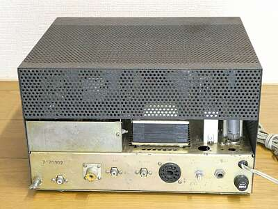
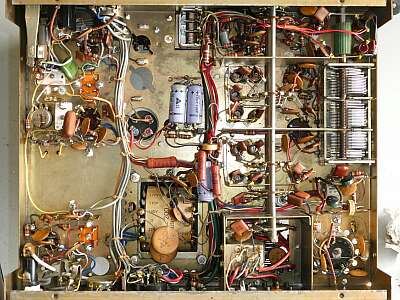
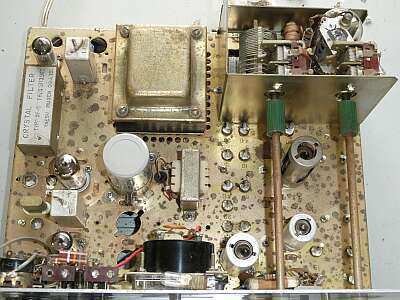
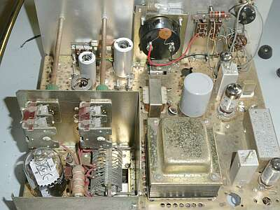
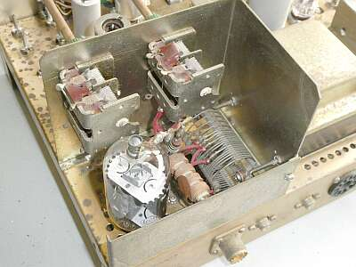
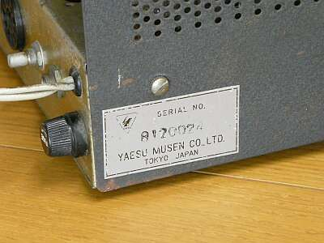
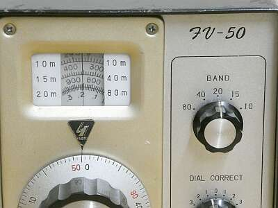
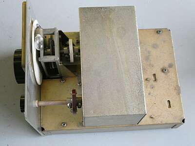
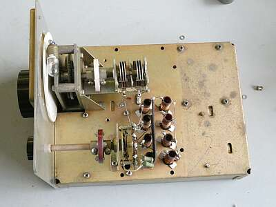
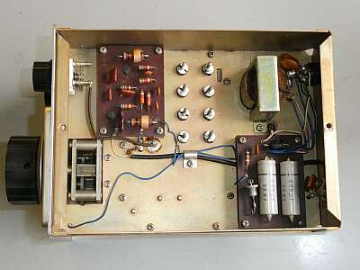

 |
極めてシンプルな背面です |
 |
シャーシ底面です
電源トランスには、「YAESU」という記載があります |
 |
シャーシ上面
ご覧のように、あまり保存状態は良くありません
クリスタル・フィルターにも「ＹＡＥＳＵ」と |
 |
シャーシ上面 向きを変えて |
 |
終段部分のUPです
終段管は６ＪＭ６
ＦＬ-５０同様に６ＪＳ６かと思っていましたが違いました
６ＪＭ６は、ＦＴ-１００、ＦＴ-ＤＸ１００にも採用されたもので、６ＪＳ６より一回り小さいものです |
 |
「YAESU」の銘板がこんなところに貼ってあります |
| ＹＡＥＳＵ ＦＶ-５０ |
 |
こちらは、ＹＡＥＳＵ製品です
そもそもＦＬ-５０用に用意されたものですが、同一周波数構成の本機でもそのまま使用できます
各バンドごとの一発発振ですので、ダイヤル目盛りもそれぞれです
なぜかダイヤルは、波長表示です
１９６７年頃の発売で、当時￥７,０００
その後、ＦＶ-５０Ｂ（ＦＬ-５０B、ＦＴ-５０用）、ＦＶ-５０Ｃ（ＦＴ-７５用）と後続機が発売されました
|
 |
ケースから中身を取り出したところ
極めてシンプルそのものです（何も見当たりません！） |
 |
シールドケースを取り外したところです
１４MHｚ帯でも９ＭＨｚ帯の発振
２１ＭＨｚ帯では、１６ＭＨｚ帯の一発発振です
安定度を求めるには、構造的な強度が求められます
手本としたと思われる、ＵＳ ＳＷＡＮ社の ＳＷＡＮ-５００ のＶＦＯの構造を参考にしてみてください
こちらは、かなり頑丈に作られていることがお分かりいただけます |
 |
シャーシ底面です
発振回路と電源回路の基板2枚だけです
初代は、周波数（ダイヤル）補正は小容量のＶＣです
ＦＶ-５０Ｂ以降では、ＲＦＡと称し、バリキャップ方式に変更され、ＲＦＡ：ＯＦＦの時は、送受一緒の周波数微調、ＲＦＡ：ＯＮの時は。受信周波数のみ微調できるようになっているようです
本機には内臓されているトランスがありませんね
また構造では、発振周波数の調整をしやすくする目的か、ケース後ろから調整できるよう発振コイルの取り付け方向が変更されています |
|